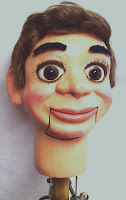
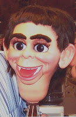

"Articulating" neck?
3/4/2009
Reader comment: "I am looking for a new figure, more professional. I'd like one with moving eyes, eye brows, mouth and fully articulating neck movement."
* * * * * *
From Clinton: I can often tell when a person has been perusing various figure makers web sites by the terms they use when asking about a vent figure. The term "articulating neck" is such term. Many figure makers refer to a "ball and socket" when describing the way the figure's head is positioned on the shoulders (myself included). I've never used the term "articulating" because technically, "articulating" implies a "jointed joined connection". While a few rare figures have had heads with necks that are "fully articulating and connected to the body", with heads connected to the bodies with some sort of "yoke suspension", they are few and far between.
The important feature all professional figures share is the ability to turn the head left to right, tilt from side to side, and nod forward and back, as well as turn full circle. Such visual movements are critical to achieve realistic lifelike movement in the figure - in whatever manner it may be described.
{kind=link}
{kind=link}

The older Maher figure (left) has a neck with flat base.
{kind=link}

It was designed to drop through the neck opening at the shoulders. The head on the right has a neck with rounded base, designed to rest upon the shoulders with only the headpost extending downward through the shoulder opening ("ball and socket"). While both provide a full range of head movements, in neither design is the head joined permanently to the body; neither design is an "articulating" setup in the truest sense of the word. I believe one can safely say the "ball/socket" design (right) is currently the industry standard.